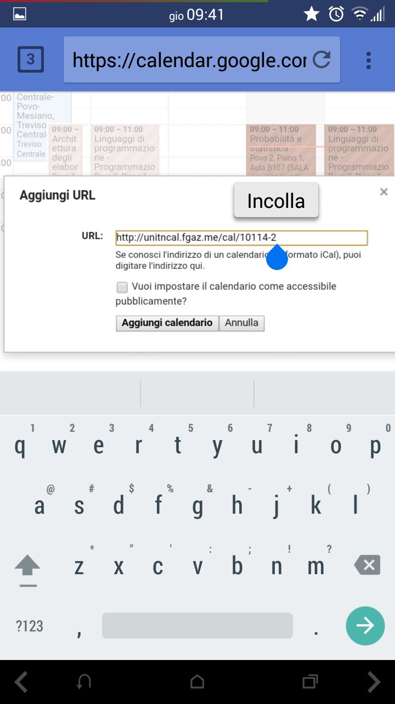

Istruzioni per Android
Purtroppo Android non supporta in sé la sincronizzazione con file .ics, quindi è necessaria una piccola applicazione aggiuntiva (avrà un'influenza praticamente nulla sulle prestazioni del dispositivo) per semplificare le cose. Se questo è ok, prosegui con l'alternativa 1.
Se non vuoi utilizzare applicazioni aggiuntive o vuoi sincronizzare il calendario con google, segui l'alternativa 2, ma tieni presente che la procedura è un po' più lunga.
Alternativa 1: Android tramite icsDroid
ICSdroid è una semplicissima applicazione che ci permette di sincronizzare il calendario fornendo un URL. Procedura mediante ICSdroid:
- Copia il link del calendario come descritto nella home;
- Installa icsDroid dal play store (o gratuitamente da f-droid (link diretto all'apk))
- Apri icsDroid<&li>
- Aggiungi un calendario cliccando su +;
- Incolla l'URL e dai la conferma;
- Controlla sull'applicazione Calendario se la sincronizzazione è attiva;
- Apri il calendario: il gioco è fatto!
Alternativa 2: Android con account Google sicronizzato
Se avete uno smartphone Android, molto probabilmente avrete anche l'account Google sincronizzato. Per esempio, se installate applicazioni dal Play Store o utilizzate Gmail, sicuramente lo è.
Procedura online sul sito di Google (da fare la prima volta che si importa il calendario):
- Copiare il link del calendario come descritto nella home;
- Aprire il browser che si preferisce (Chrome, Firefox, eccetera) e collegarsi alla pagina: google.com/calendar;
- Fare il login su Google se necessario;
- se appare l'interfaccia mobile, cliccare in fondo alla pagina sul link "Visualizza: Desktop";
- Sulla barra che vi si presenta a sinistra, sotto la voce Altri calendari, aprire il menu a tendina e cliccare su Aggiungi URL;
- Incollare il link (tasto destro => Incolla) e cliccare su Aggiungi calendario;
- Da smartphone, attivare la sincronizzazione del calendario:
- dalla propria applicazione calendario selezionare Calendari da visualizzare;
- selezionare e attivare il link che inizia per http://unitn.fgaz.me/cal/....
- Ritornare al calendario: il gioco è fatto!
Screenshots:


- 